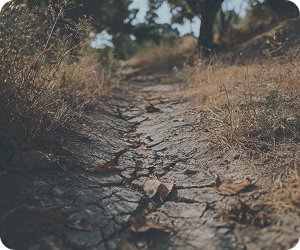
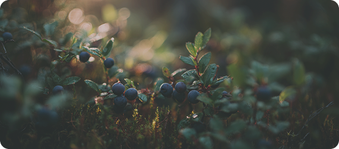

Сезоны
Что искать в лесу
в разное время года
Что важно знать о сезонах
Лес меняется в течение года, и вместе с ним меняется то, что можно увидеть и найти. Одни и те же места выглядят по-разному в зависимости от сезона.
Понимание сезонности помогает лучше ориентироваться в лесу и замечать больше деталей. Это делает прогулку интереснее и спокойнее.
Главное — не искать одно и то же круглый год, а подстраиваться под изменения леса.
Как лес меняется в течение года
Весной появляется первая зелень, вода становится заметнее, а земля мягче. Летом лес уплотняется — больше листвы, травы и насекомых. Осенью появляются грибы и сухие листья, а цвета становятся контрастнее. Зимой деталей меньше, но лучше читаются формы и следы.
Каждый сезон даёт свои ориентиры и возможности.
Где в разные сезоны
больше всего активности
20%
Зима
25%
Осень
25%
весна
30%
Лето
Понимание сезона помогает быстрее выбрать маршрут и понять, где искать интересные точки. Проверяй эти зоны в первую очередь — там лес наиболее активен.
Почему важно учитывать сезон сразу
Если игнорировать сезон, можно не заметить важные изменения: пересохшие тропы, разлившиеся участки или скрытые под листвой объекты.
Осознание сезона помогает быстрее адаптироваться и избежать лишних ошибок в движении.
Даже короткая прогулка становится понятнее, если учитывать время года.


Пошаговый алгоритм наблюдения
Наблюдение
Обращай внимание на цвет, плотность и состояние леса — это первый сигнал сезона.
Оценивание
Земля, листья, снег или трава под ногами подсказывают условия движения.
Детали
Следы, влажность, свет и ветер помогают понять, как меняется среда.
Что можно найти в лесу
Даже простая прогулка становится интереснее, если знать, на что обращать внимание. В каждом сезоне есть свои находки:
01
Весна
Вода, молодые листья, первые растения
02
Лето
Тень, густая трава, насекомые
03
Осень
Грибы, сухие листья, контрастные цвета
04
Зима
Следы, формы рельефа, открытое пространство